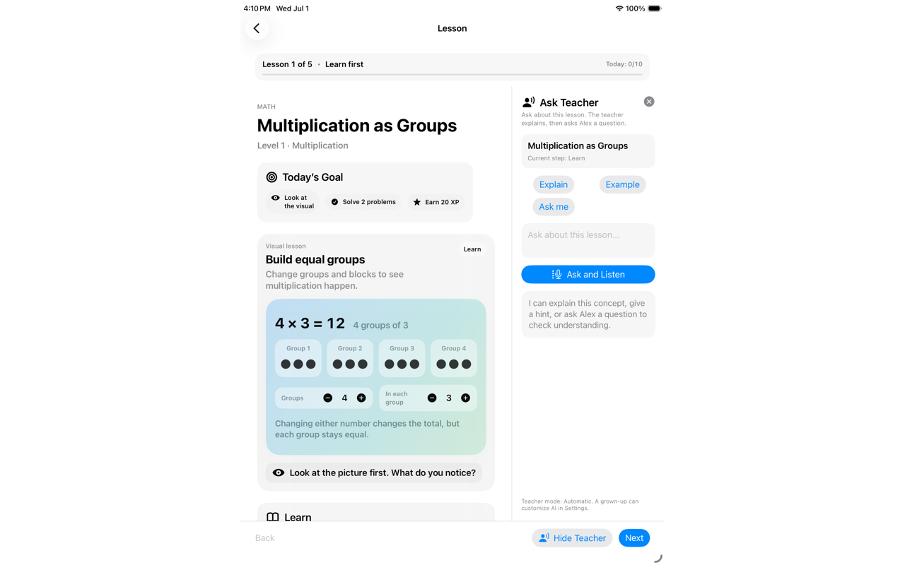

Learning model
Support learners with guidance that strengthens comprehension instead of replacing the work of learning.
Education • AI tutoring • Learning design
Learning Coach is an AI-supported concept for guided learning experiences that help students notice patterns, practice deliberately, and build understanding through reflection rather than shortcutting the work.

Overview
The project direction is built around carefully structured guidance that keeps attention on understanding the concept rather than bypassing it.